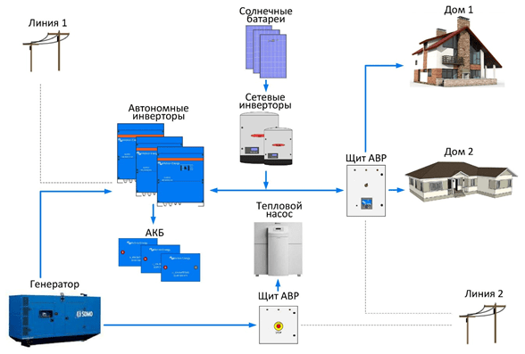

Solar systems Invest

 066-334-24-35
066-334-24-35
098-329-08-79
063-706-01-33
Solar systems Invest
066-334-24-35
Мы, группа опытных специалистов, которые хорошо разбираются в энергетике, электрических сетях и электронике. Еще до эры солнечной энергетики мы поставили не один десяток подстанций, шкафов автоматики, проложили не один десяток километров кабелей и воздушных линий электропередач, подключили и запустили столько же оборудования. Мы выбираем миссию: «делай надежно и недорого».
Приобретение такой электростанции для продажи энергии по зеленому тарифу это бизнес!
Основные параметры такого бизнес-проекта:
Вариант 1 - сетевая солнечная электростанция для физлиц мощностью от 5
кВт, не более 30 кВт (или 50
кВт на крышах капитальных строений);
Вариант 2 - сетевая, промышленная солнечная электростанция
(«энергетический кооператив») без
необходимости регистрации в НКРЭ мощностью не более 150 кВт.


В 2020 году «зеленый тариф» оплачивается продавцам в размере 0,16 евро за 1 кВт*час. Стоимость сетевой солнечной электростанции «под ключ»: 500-700 долларов за 1 кВт установленной мощности. Годовая выработка электроэнергии на широтах Днепра 1000-1050кВт*час на 1 кВт установленной мощности. Срок окупаемости вложений 4-7 лет.

Для тех Заказчиков, у кого есть ввод от сети, но не хватает лимитов мощности. Вариант совмещения
потребностей в дополнительной энергии с продажей «зеленого тарифа».
Схема гибридной солнечной электростанции 1.1
Преимущество такой станции в совмещении выработки энергии для автономного энергоснабжения объекта и
подачи «зеленого тарифа» в сеть, когда нет необходимости в потреблении энергии на объекте.
Недостаток – дорогие «солнечные» аккумуляторы, допускающие много циклов заряда-разряда.
Мы умеем не ставить лишних солнечных панелей и дорогих АКБ. Вместо этого делаем диспетчеризацию
электрических нагрузок – отключаем неприоритетных потребителей в то время, когда не хватает мощности. Не
запасаем в солнечное время излишков энергии в АКБ.
Таким образом «надежно и недорого».
Схема гибридной солнечной электростанции 1.1

Нет электрической сети или сеть очень слабая! В полях, лесах солнце всегда есть!
Автономная солнечная электростанция имеет явное преимущества перед автономными дизель-электростанциями,
их при работе не надо заправлять топливом, обслуживать и держать для этого персонал.
НЕДОСТАТОК автономной солнечной электростанции – ее стоимость.
Наша миссия «делай надежно и недорого» включает бесплатный предварительный расчет автономного
электроснабжения. В этом случае стоимость автономного кВт*часа ниже, чем в сети, не считая того что эту
сеть еще надо подвести к объекту. Плюс, Заказчик не зависит от капризов РЭС.
Схема автономной солнечной электростанции 1.2
